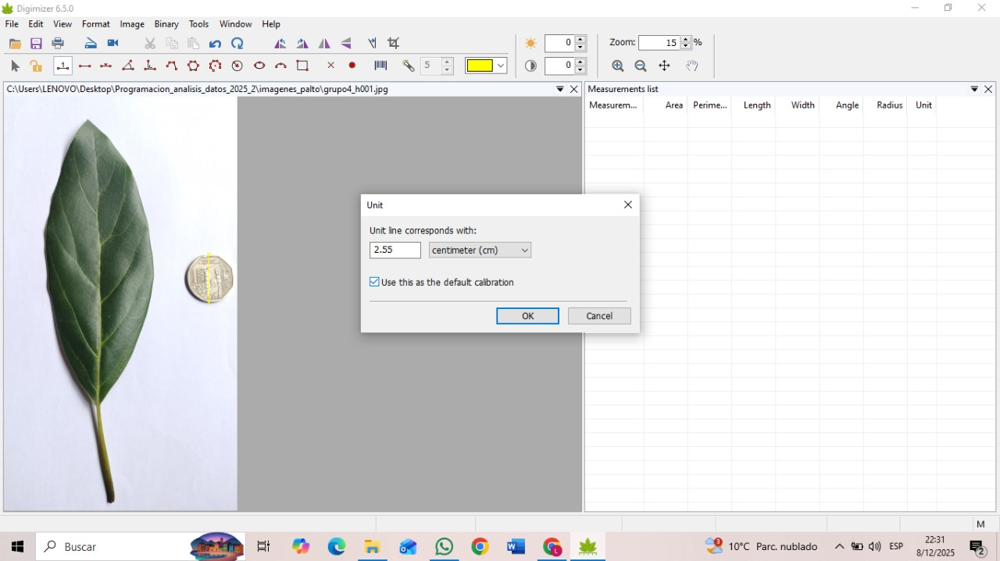
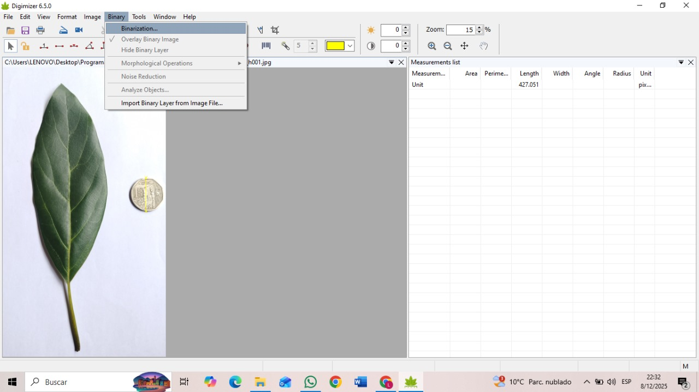
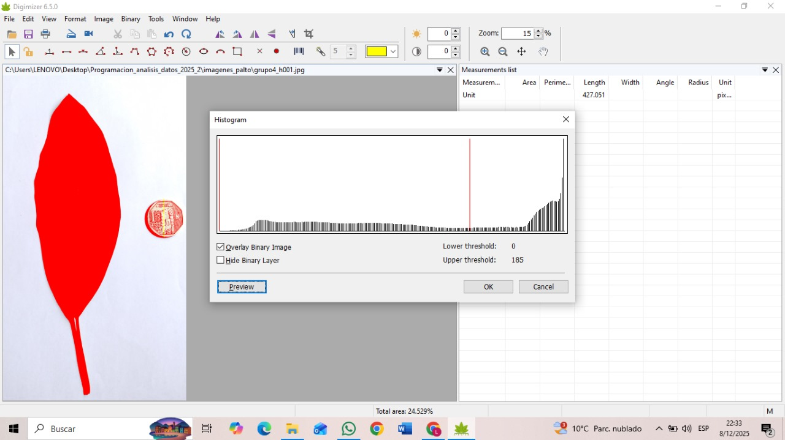
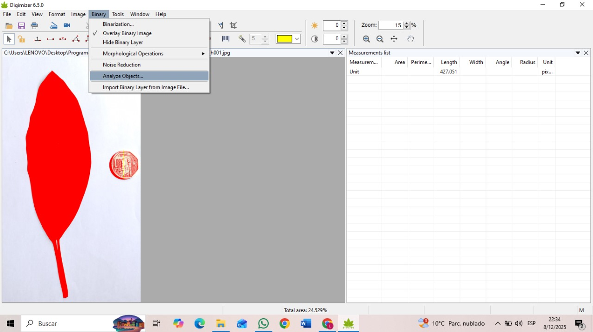
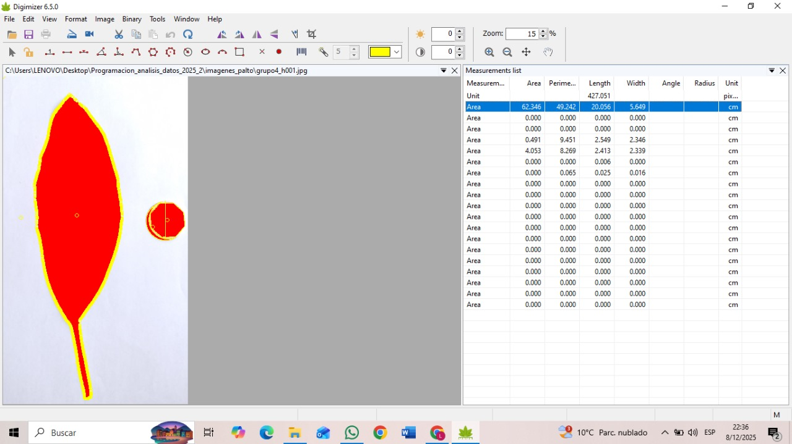

1 INTRODUCCION
El fenotipado vegetal basado en imágenes ha adquirido relevancia en la investigación agronómica y fisiológica debido a su potencial para describir rasgos morfológicos de manera objetiva, estandarizada y reproducible. En cultivos como aguacate, frijol y quinua, la caracterización foliar constituye una etapa fundamental para comprender el crecimiento, evaluar la respuesta a condiciones ambientales y estudiar la variabilidad genética. Sin embargo, los métodos manuales resultan laboriosos, presentan sesgo observacional y limitan el análisis de grandes volúmenes de muestras. En este contexto, la incorporación de software especializado para la medición digital constituye un avance metodológico que favorece la cuantificación rigurosa de variables como área foliar, perímetro, longitud y ancho, reduciendo la dependencia de instrumentos manuales y acelerando la toma de datos. El presente documento desarrolla el flujo de trabajo del software Digimizer aplicado a fenotipado foliar y establece una comparación metodológica con Label Studio, herramienta utilizada previamente para anotación manual de hojas de palta.

2 DESARROLLO
2.1 Marco conceptual del fenotipado digital
El fenotipado digital corresponde a un conjunto de procedimientos destinados a extraer información cuantitativa a partir de imágenes adquiridas mediante escáner o cámara fotográfica. Su fundamento metodológico se basa en la segmentación de objetos biológicos y la medición automática de parámetros geométricos mediante algoritmos de procesamiento digital. La precisión del procedimiento depende tanto de la calidad de la imagen como de la estandarización en la adquisición, binarización y calibración de las unidades de medida.
2.2 Metodología empleada con Digimizer
Familiarización con el programa
En primer lugar, me familiaricé con la interfaz de Digimizer con el propósito de reconocer las herramientas principales y comprender la lógica de funcionamiento del software. Esta fase inicial me permitió identificar dónde se ubican las opciones de calibración, cómo se gestionan las imágenes y qué parámetros intervienen en la segmentación automática de la hoja. Consideré esta etapa como un paso necesario para asegurar que, durante el procedimiento de análisis, las configuraciones aplicadas correspondieran adecuadamente a los objetivos del fenotipado y facilitaran la obtención de mediciones morfológicas precisas.
Selección de la imagen
Una vez comprendida la interfaz, se procedio a seleccionar la imagen correspondiente a la hoja previamente escaneada, cabe mencionar que las imagenes empleadas, fueron las mismas que se emplearon en el programa Label studio. En esta etapa se verifico que la imagen presentara un fondo uniforme y una adecuada resolución, dado que estas condiciones favorecen la segmentación automática posterior.

Selección de la escala en centímetros (cm)
En esta etapa se traso una línea sobre un objeto de referencia cuyo tamaño real conocía (en este caso, una moneda) con el fin de establecer la relación entre la distancia en píxeles y las unidades métricas. Tal como se observa en la imagen, Digimizer mostró una ventana emergente denominada “Unit”, en la cual ingresé el valor real correspondiente a la longitud marcada (2.55 centímetros). Al seleccionar esta opción y confirmar con “OK”, el programa convirtió automáticamente las mediciones internas desde píxeles hacia centímetros, de modo que las variables morfológicas obtenidas posteriormente (área, perímetro, longitud y ancho) quedaran expresadas en unidades físicas reales.

Selección de los datos a mostrar
En este paso se accedio al menú de configuración de columnas para indicar qué variables morfológicas se deseaba visualizar en la lista de mediciones, tal como se aprecia en la ventana emergente mostrada por el programa, Digimizer permite activar o desactivar distintos parámetros, entre ellos área, perímetro, longitud, ancho, ángulo y otras variables geométricas. Seleccioné únicamente aquellas medidas relevantes para el fenotipado foliar, con el fin de obtener una tabla de resultados más organizada y enfocada en los rasgos que se pretendían analizar. Consideré esta selección como un paso metodológico pertinente, ya que evita la saturación de información y facilita la interpretación posterior de los datos exportados para el análisis estadístico.

Binarización de la imagen
Posteriormente, seleccioné la opción “Binarization” ubicada en la pestaña “Binary”, con el propósito de transformar la imagen en un mapa binario y aislar la lámina foliar del fondo. Al ejecutar esta función, el programa analiza los valores de intensidad de los píxeles y genera una representación en la que la hoja se muestra coloreada mientras el fondo permanece neutral. Se considero esta etapa indispensable para obtener un contorno definido, ya que la binarización permite diferenciar de manera automática los límites de la hoja, facilitando la medición de variables morfológicas como área, perímetro y dimensiones.

Ajuste del umbral para obtener la representación completa de la hoja
En esta etapa ajusté el valor del umbral dentro de la ventana de histograma con el propósito de asegurar que la binarización incluyera la totalidad de la lámina foliar. Tal como se observa en la imagen, la hoja aparece coloreada en rojo, mientras que el fondo queda excluido. Para lograrlo, modifiqué el valor del “Upper threshold” moviendo la línea vertical hasta que toda la superficie foliar se mostrara completamente cubierta, evitando que zonas de la hoja quedaran sin detectar o que el fondo fuera incluido por error. Consideré este ajuste indispensable para obtener una segmentación precisa que garantizara la correcta medición de área, perímetro y dimensiones en los pasos posteriores.

Análisis de la hoja
Finalmente, se selecciono la opción “Analyze Objects” dentro del menú “Binary” con el objetivo de procesar la imagen binarizada y obtener las variables morfológicas correspondientes a la hoja. Al ejecutar esta función, Digimizer identificó la hoja como un objeto independiente y calculó automáticamente parámetros como área, perímetro, longitud máxima y demás medidas previamente seleccionadas. Consideré este procedimiento como el cierre operativo del análisis, ya que a partir de este momento la hoja quedó cuantificada matemáticamente y los valores estuvieron disponibles para su exportación y posterior interpretación estadística.

Obtención de las variables morfológicas
Una vez ejecutado el análisis, en la sección derecha de la pantalla se generó automáticamente la lista de mediciones correspondientes a cada objeto identificado por el software. Tal como se aprecia en la imagen, Digimizer calculó un conjunto de parámetros morfológicos, entre ellos el área foliar, el perímetro, la longitud máxima y el ancho de la hoja. Estos valores, expresados en centímetros gracias a la calibración previa, pueden ser exportados o registrados para su comparación posterior entre muestras o tratamientos experimentales.

3 RESULTADOS
Luego de aplicar el procedimiento completo en Digimizer, obtuve de manera automática las variables morfológicas correspondientes a cada hoja procesada. En el caso mostrado, el software registró valores de área foliar expresados en centímetros, así como medidas de longitud y ancho determinadas a partir de la segmentación binaria de la imagen. Asimismo, se consignó el perímetro de la lámina foliar, lo cual permitió disponer de un conjunto de datos cuantitativos suficiente para caracterizar la forma de la hoja analizada.
Los valores calculados se visualizaron inmediatamente en la lista de mediciones generada por el programa y, posteriormente, estuvieron disponibles para su exportación.
Enlace del documento drive, en la cual se observa las medidad de cada hoja, optenidas mediante el programa Digimizer:
https://drive.google.com/drive/folders/13HehPJEef9BlZpH8GLEnNRFPhdhSdEiP?usp=sharing
3.1 Comparación entre el proceso semiautomatizado en Digimizer y la anotación manual en Label Studio
Una vez obtenido el conjunto de variables morfológicas a partir del procedimiento semiautomatizado aplicado en Digimizer, se procedio a comparar esta metodología con la experiencia previa que desarrollé utilizando Label Studio para la anotación manual de hojas de palta. En el caso de Label Studio, el delineado del contorno de la hoja se realizaba mediante herramientas manuales, lo cual implicó una participación directa y continua del usuario en la definición de los límites foliares. Esta modalidad resultó adecuada para comprender visualmente la anatomía de cada hoja; sin embargo, requirió mayor inversión de tiempo y mayor atención al trazar los bordes, especialmente cuando se procesaron varias imágenes consecutivas.
En cambio, Digimizer permitió segmentar la hoja mediante binarización y recuperar automáticamente mediciones como el área, la longitud y el ancho, reduciendo la intervención manual y estandarizando el cálculo de los parámetros. En este sentido, considero que Digimizer constituye un avance metodológico respecto a mi práctica con Label Studio, ya que facilita la cuantificación objetiva y disminuye la posibilidad de variación entre mediciones.
No obstante, estimo pertinente aclarar que Label Studio sigue siendo útil cuando se requiere construir conjuntos de datos etiquetados para entrenamiento de modelos de visión por computadora, ya que su finalidad principal es la anotación manual y la generación de información para sistemas de IA. Por su parte, Digimizer se orienta a la medición morfométrica y constituye una herramienta más eficiente cuando el objetivo es obtener parámetros cuantitativos de manera directa.
4 CONCLUSIONES
La aplicación del software Digimizer permitió cuantificar de manera precisa y reproducible los rasgos morfológicos fundamentales de la hoja analizada, tales como área, longitud y ancho, mediante un proceso semiautomatizado basado en binarización y segmentación digital. Ademas considero que esta experiencia constituyó un avance metodológico respecto al procedimiento manual previamente realizado con Label Studio, en la medida en que redujo la intervención directa durante la medición y proporcionó resultados estandarizados expresados en unidades reales.
De manera complementaria, reconozco que ambas herramientas cumplen funciones diferenciadas dentro del fenotipado digital: mientras Label Studio resulta adecuada para la anotación manual y la generación de datos destinados al entrenamiento de modelos de visión por computadora, Digimizer se orienta al análisis morfométrico cuantitativo con menor carga operativa. En este sentido, valoro que el uso sucesivo de ambos programas haya permitido entender primero la lógica de la anotación manual y, posteriormente, la transición hacia procedimientos más automatizados.
Finalmente, considero que el fenotipado foliar digital constituye una etapa inicial dentro de un escenario más amplio hacia tecnologías basadas en inteligencia artificial, cuyo objetivo final es automatizar el análisis de imágenes, incrementar la escala del fenotipado vegetal y ofrecer herramientas más eficientes para la investigación agronómica contemporánea.
5 REFERENCIAS
MedCalc Software Ltd. (2025). Digimizer image analysis software (Software). Recuperado de https://www.digimizer.com/
Sauceda-Acosta, C. P., López-Hernández, J. F., Irais-Callejas, N., & Acosta-Gallegos, J. A. (2017). MACF-IJ, método automatizado para medir color y área foliar usando análisis de imágenes digitales. Revista Fitotecnia Mexicana, 40(4), 409–417. Recuperado de https://www.scielo.org.mx/
Yang, W., et al. (2023). A method of measuring plant leaves phenotypic parameters based on scanner and ImageJ. Journal of Beijing Forestry University, 45(6), 17–28. https://doi.org/10.12190/j.issn.2096-1197.2022.06.17
Nguyen, C. V., Slaughter, D. C., & Barrett, D. M. (2017). 3D scanning system for automatic high-resolution plant phenotyping. Frontiers in Plant Science, 8, 2007. https://doi.org/10.3389/fpls.2017.02007
Li, L., Zhang, Q., & Huang, D. (2014). A review of imaging techniques for plant phenotyping. Sensors, 14(11), 20078–20111. https://doi.org/10.3390/s141120078